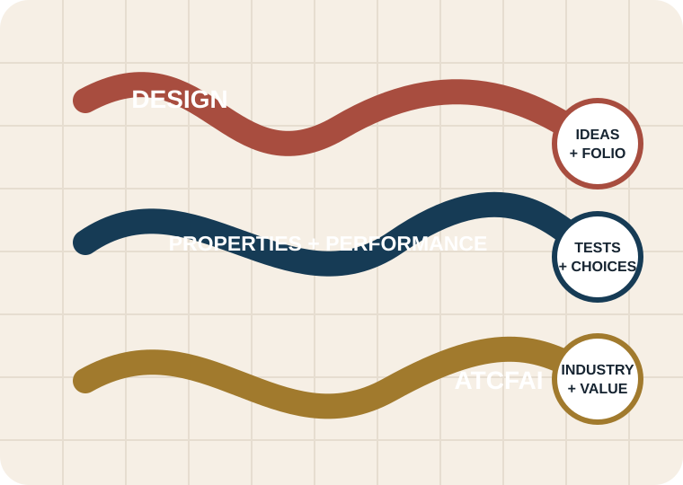

Year 11 Preliminary · 120 indicative hours
Textiles and Design
Learn to see the reasoning inside a textile: how ideas are organised, why materials behave as they do, and how design connects with industry and society.

How this course works
Learn, check, apply and keep evidence
Each completed module uses the same calm rhythm, so you always know what to do next.

Visual analysis
Notice, connect, justify
A strong design comment does more than name what is present. It points to visible evidence and explains how that evidence supports a user, purpose or design effect.
- Notice: identify a specific line, shape, texture or colour relationship.
- Connect: link it to a requirement or principle.
- Justify: explain the effect on the user, purpose or overall design.
Course pathway
15 modules across the Preliminary course
Move from design foundations through fibre, yarn, fabric and testing, then finish with industry, quality, value and course revision.
Formal assessment
Use this site to learn and prepare
Your teacher’s current task notice is the authority. Dates, weightings, final project requirements, practical procedures and submission instructions are not set by this website.